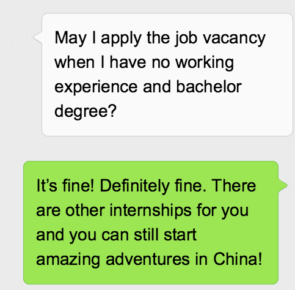

Talk to Us and Check Your Eligibility
Each job requires specific qualification, please read the job description fully and carefully before applying. If you want to know any further information, just give us a call or make an appointment to have a Skype! Skype ID: hello_chinease@outlook.com
Step One
Step Two
Apply your favorite Position then take the initial video interview
initial video interview When you are ready, simply Apply Online or send your brilliant CV and Cover Letter to: info@chinease.co.uk Depend on each position, Candidate may be ask
to attend an online video interview, which lasts approximately 15-30 minutes.
Receiving an Offer after Passing the Interview
Congratulation! Successful candidates will be given an offer within a week(normally) after the final interview.
Step Three
Step Four
Visa Check and documents preparation
After receiving the offer, the candidate should prepare all the documents and follow the visa process step by step. Don't worry! We are here to help and make your China adventure easy!
Welcome to China! Induction Week
Travel expenses will be covered by your employer as a travel bonus after finishing your contract. Your future colleague will be waiting for you at airport and they will take you to your new home. Whatever you want to know about your career, your life,
and the problems you may face during your adventure in China will be solved within the induction week.
Step Five
The reference time table for job application
| Resume screening |
1-2 Week(s) |
| Video interview |
1-2 Week(s) |
| Final Skype interview |
2 Weeks |
| Documents Preparation（Chinese Work Permit） |
4-6 Weeks |
| Visa application |
1 week |
Usually, the reference time from Resume screening to induction is about 10 weeks.
requently asked questions
